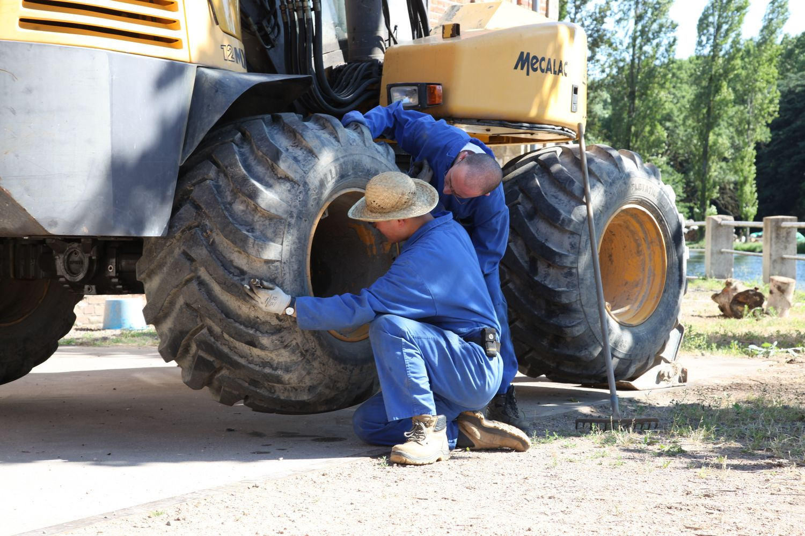
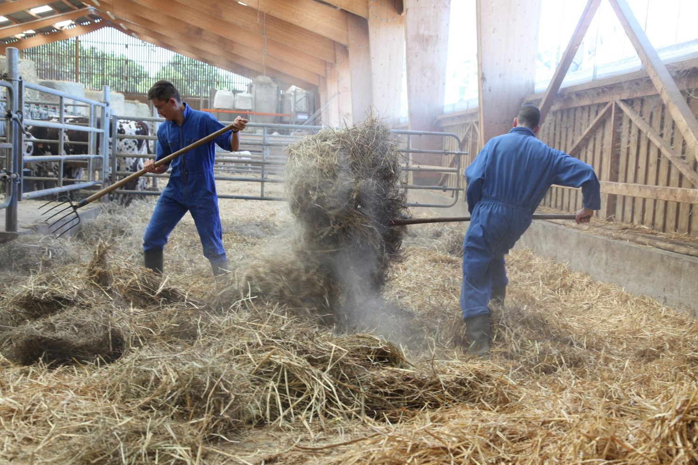
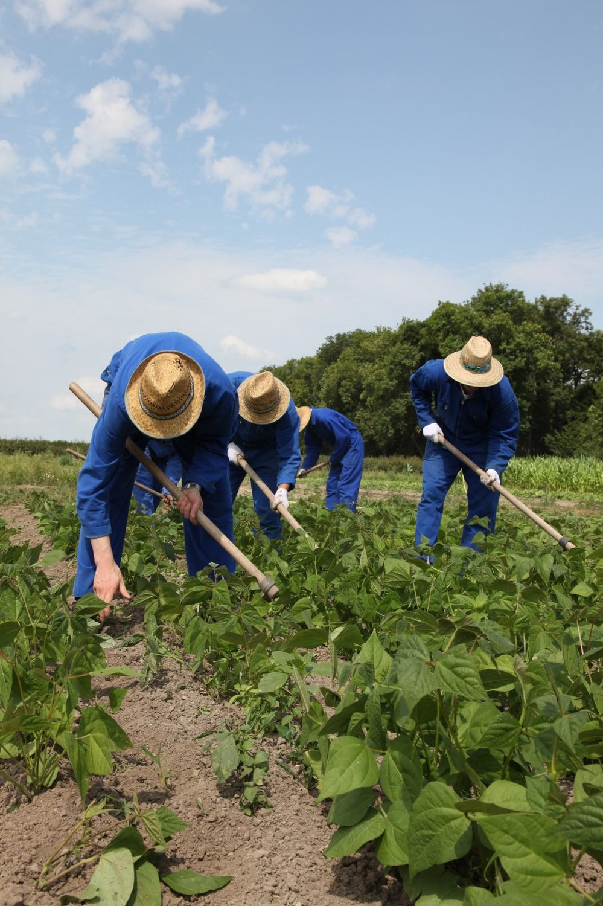
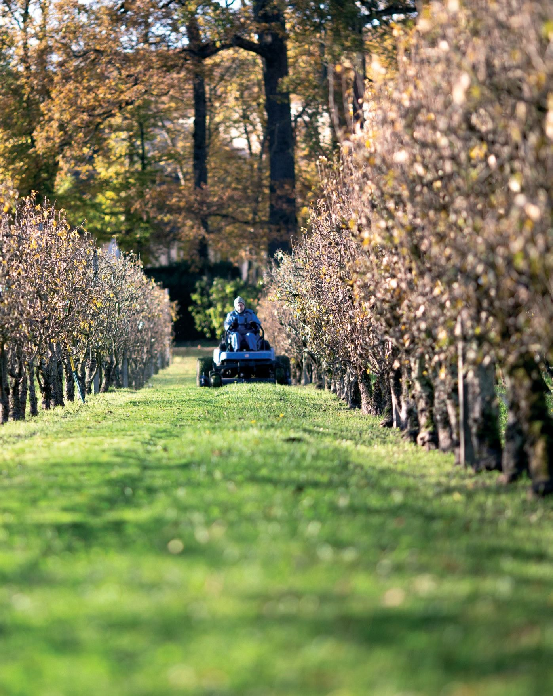
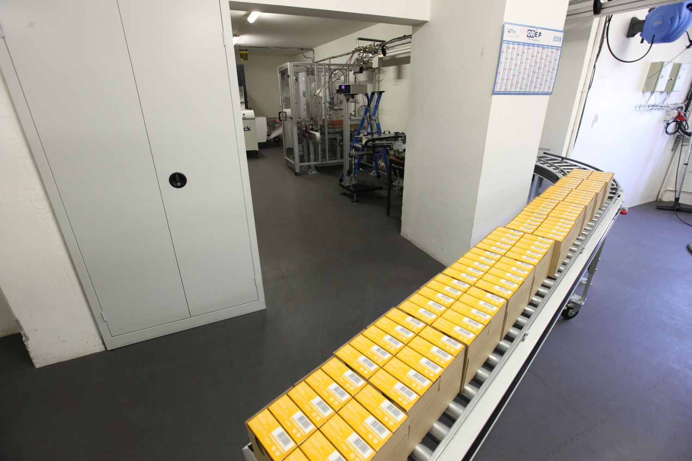
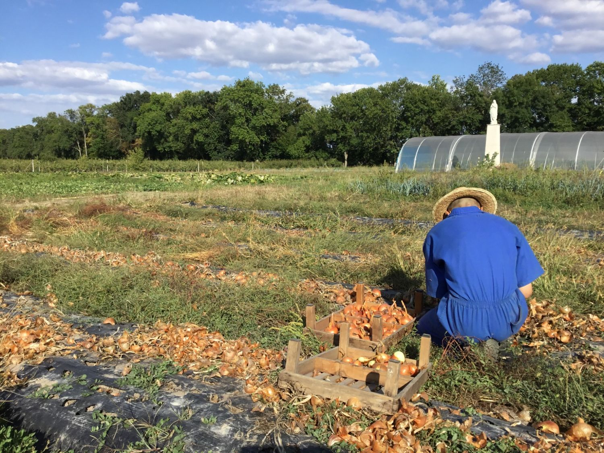
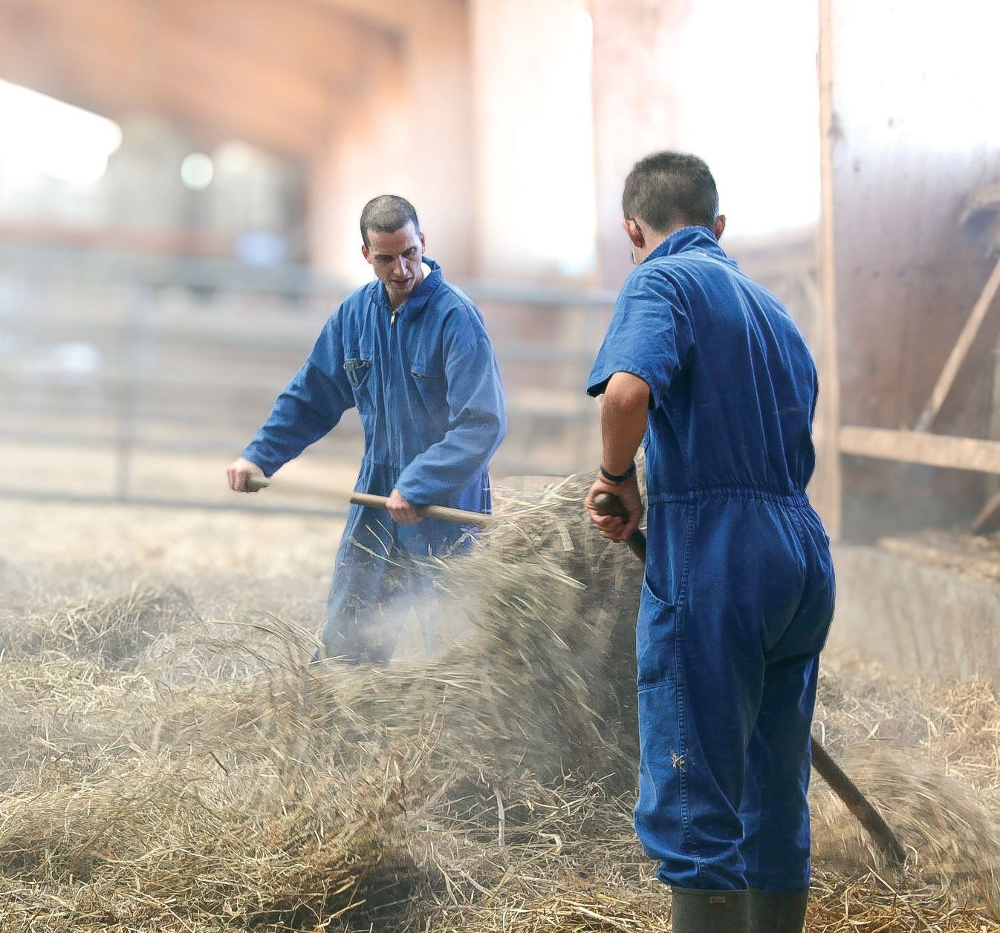
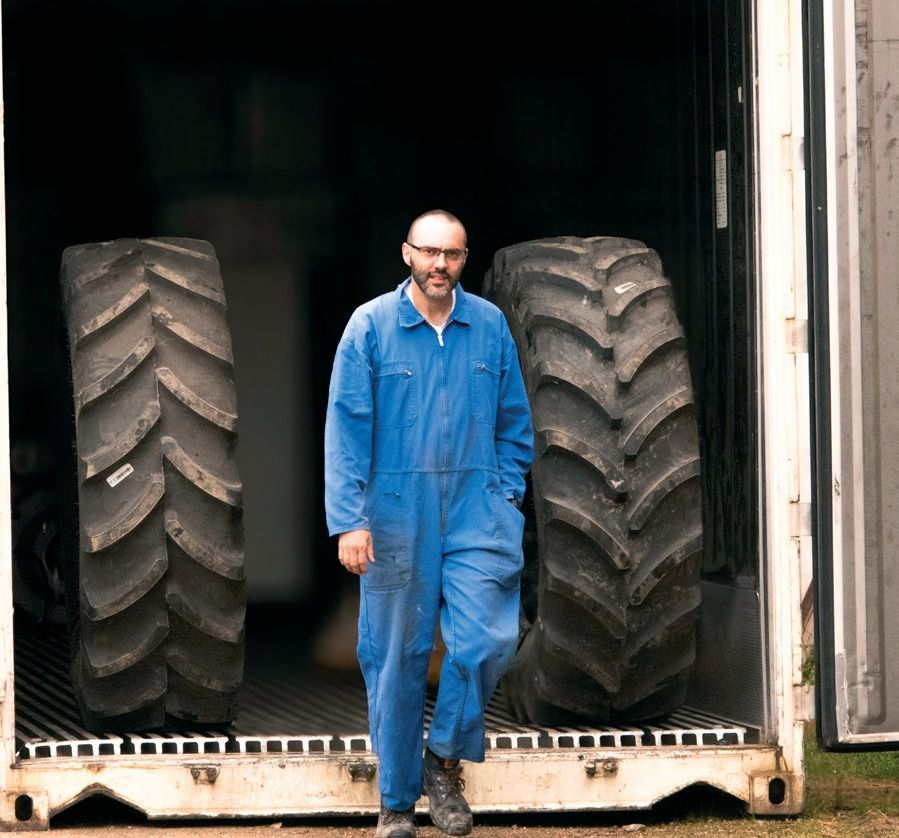
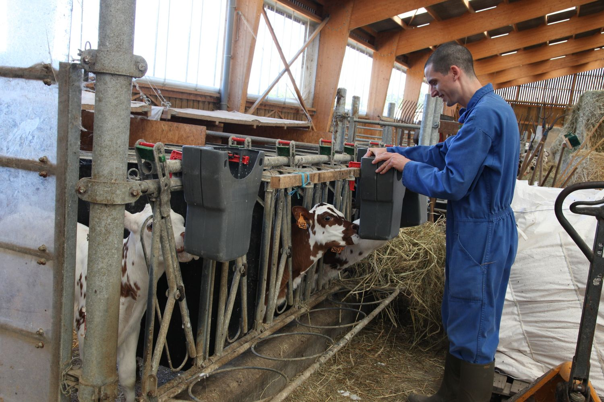

Saint Benoît est réaliste. Appelé à une aventure extraordinaire – vivre proche de Dieu et collaborer à l’œuvre du salut –, le moine reste un homme ordinaire. L’idéal de sa vocation, il le réalise au milieu des exigences communes à toute vie humaine. Ainsi, pour vivre, doit-il travailler.

Plus profondément, il s’agit d’acquérir un certain nombre de qualités indispensables à la vie d’union à Dieu. Le travail est l’occasion de développer les vertus du désert. Celles dont le moine a le plus besoin pour soutenir le combat spirituel : détermination, régularité, persévérance…
« Qu’il est nécessaire aux moines de travailler dans les champs, sous la pluie, le soleil, dans la boue, la glaise et le vent ! Ils nous inspirent la vertu, nous rendent stables comme la terre où nous vivons. »
Thomas Merton


Le travail manuel en équipe procure le sens du sacrifice. Savoir payer de sa personne, s’oublier, donner son temps et sa fatigue, sans espérer de louange. Ce dévouement que donne la vie concrète, les livres peuvent le faire oublier. C’est pourtant là une attitude essentielle. En même temps, le travail est apprentissage de la vie commune. C’est le lieu par excellence où cristallisent les relations fraternelles. Ainsi, en plus du courage et de la ténacité, du sens du réel et de la responsabilité, le travail inculque au moine l’attention aux autres, la délicatesse, la générosité, la patience. Toutes qualités dont l’absence pourrait compromettre sa vie de prière. Mais il n’acquiert pas forcément ces qualités, ni même d’abord, sur ce terrain-là.
La grandeur d’un métier est peut-être, avant tout, d’unir des hommes.
Antoine de Saint-Exupéry


Concrètement, le travail à Sept-Fons
La part lucrative du travail, celle qui garantit à la communauté sa subsistance matérielle, repose pour l’essentiel sur l’activité de notre atelier de confitures et celle du Moulin de La Trappe. Cette petite PME fabrique, conditionne et expédie toute la gamme de nos compléments alimentaires. Ce sont des dérivés de la fameuse Germalyne, notre produit phare à base de germe de blé, mis au point dans les années 1930. Ces deux emplois occupent à eux seuls une bonne douzaine de frères. Quelques six ouvriers y travaillent matin et soir.

Visitez notre boutique en ligne
L’autre part du travail est plus « gratuite ». Si l’on excepte les tâches domestiques (cuisine, buanderie, vestiaire, divers entretiens et nettoyages), c’est principalement le travail de la terre – dans la grande tradition trappiste – qui assure cette fonction.


Avec quelques 100 hectares de surfaces agricoles, ce n’est pas la besogne qui manque ! Celle-ci comprend l’élevage et la traite d’un troupeau de vaches normandes (80 têtes de bétail environ), dont le lait est destiné à la transformation fromagère. Elle comprend aussi les cultures nécessaires à l’affourragement du bétail (maïs, céréales, légumineuses, foin) et au paillage des litières.


L’excédent de production est vendu à l’extérieur. Les productions maraîchères et fruitières du potager et du verger viennent agrémenter de produits frais de saison la table des moines et celle des hôtes. Enfin, elle inclut l’entretien des bosquets, des chemins, des haies et des espaces verts… Dans une communauté nombreuse, constituée majoritairement d’hommes jeunes, dans la force de l’âge, cette forme de travail revêt une importance particulière.
